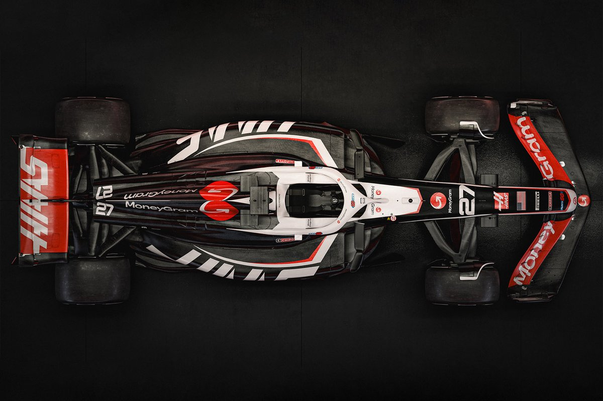

Gran Premio de España de Fórmula 1
Bienvenidos al portal web del Gran Premio de España de Fórmula 1, disputado en el emblemático Circuit de Barcelona-Catalunya en Montmeló. Esta prueba reúne a los monoplazas más avanzados del planeta, poniendo a prueba la aerodinámica, la gestión de neumáticos y la destreza de los mejores pilotos del mundo.
